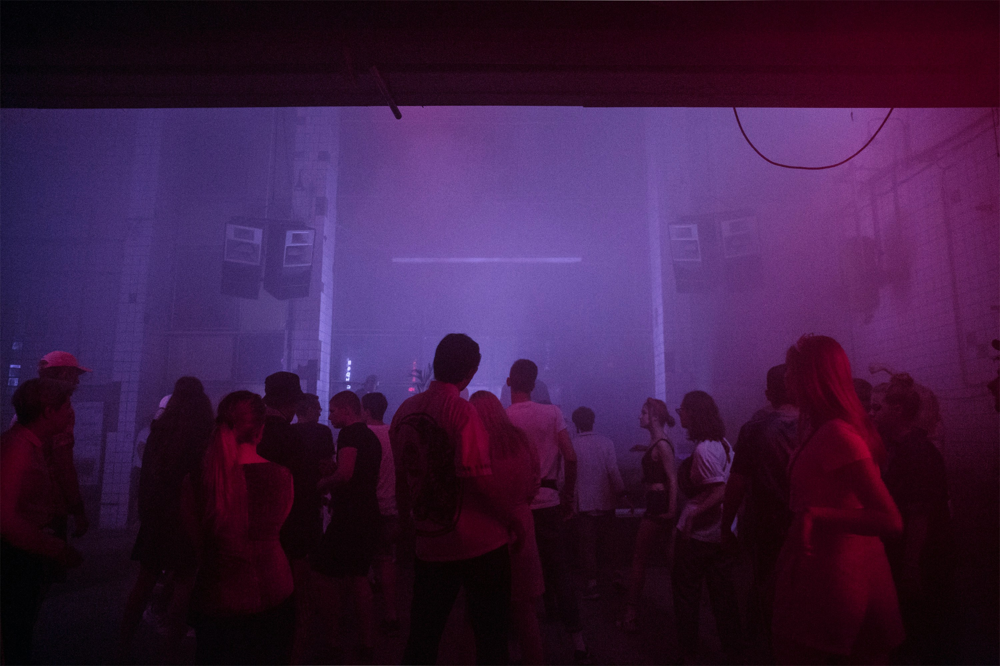

Most Anticipated Toronto DJ Events
Published on: October 1, 2024
This fall, Toronto's techno scene is bringing some of the most electrifying DJ sets to the city's underground venues. With cutting-edge soundscapes, these end-of-year performances are the most anticipated by the techno crowd.
October 11th, Berlin-based DJ and producer Fadi Mohem who is known for his deep, dynamic approach to techno, blending intricate rhythms with hypnotic soundscapes, will be performing in Toronto. His sets are a perfect balance of intensity and precision, making him a rising force in the underground electronic music scene.
Stef Mendesidis is a Greek-born and producer celebrated for his fast-paced, raw techno sets is performing in Toronto on November 1st. His unique sound combines industrial beats with a relentless energy that has captivated dance floors across Europe.
Fadi Mohem's performance in Toronto this fall promises to deliver a deep, immersive techno journey with precise, hypnotic beats that will captivate the crowd. Stef Mendesidis, on the other hand, will bring a high-energy, industrial-infused set, pulsing with relentless rhythms that will keep the dance floor moving all night.
Find out more on Resident Advisor